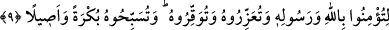

da değilsin. Kötülük, kötülükle ortadan kaldırılamaz. Fakat affetmek ve göz yummakla
yok edilir. Sapık bir kavim İsâ’ya Allah demedikçe Allah onu öldürmeyecektir. O’nunla
Allah kör gözleri açacak, sağır kulakları duyar hale getirecek ve katı kalpleri
yumuşatacaktır.
9. Ta ki (ey müminler!) Allah’a ve Resûlüne îmân edesiniz, Resûlüne yardım
edesiniz, O’na saygı gösteresiniz ve sabah akşam Allah’ı tesbih edesiniz.
“Ta ki (ey müminler!)” burada hitap Peygamber (s.a.)’e ve bütün mü’minleredir.
Dolayısıyla özel bir hitap şeklinden, genel bir hitap şekline geçilmiştir. Çünkü “Biz
seni gönderdik” ifâdesinde hitap, sadece Peygambere yönelikti. Bunun bir başka örneği
de şu âyet-i kerîmedir: “Ey Peygamber! Kadınları boşadığınızda” (Talak, 65/1)
burada önce Peygamber (s.a.)’e nida edilmiş, daha sonra, o zamanki mü’minlerin
şahsında bütün mü’minlere hitap yöneltilmiştir.
Bu durumda yukarıdaki âyet-i kerîme, Rasûlullah (s.a.)’ın bizzat, kendisinin rasûl
olduğuna îmân etmesinin gerekliliğine işâret etmektedir. Nitekim bir hadis-i şerifte
Rasûlullah (s.a.)’ın “Ben şâhidlik ederim ki, ben Allah’ın kulu ve O’nun elçisiyim”
dediği rivâyet edilmiştir.[96]
Rasûl-i Ekrem (s.a.) kendisinin peygamberliğinin, ancak, Cebrâîl’i tanıyıp ona îmân
ettikten sonra ilmî bir zarûrîlik içinde farkına varmıştır. Kendisinin peygamber olduğunu
bilip îmân ettikten sonra, kendisine indirilene îmân etmesi üzerine vâcib oldu. Nitekim
âyet-i kerîmede: “Peygamber de mü’minler de, Rabbinden indirilene îmân ettiler”
buyurulmuştur. (Bakara, 2/285).
Burada hitabın sadece ümmete yönelik olması da mümkündür. Birinci hitap sadece
Peygambere yönelikken, ikinci hitap nasıl olur da, Peygamber bir tarafa bırakılarak,
sadece ümmetine yöneltilir, diye bir soru akla gelebilir. Cevap olarak derim ki: Bir
kavmin yöneticisine yönelik söz, o kavmin bütün fertlerine yönelik olarak kabul edilir.
Tâbi olma hususunda sadece ümmeti hedef almak da mümkündür. Çünkü gaye, onların
kulak vermesidir.
“Allah’a ve Resûlüne îmân edesiniz,” dinini ve Rasûlünü desteklemek sûretiyle
Allah’a destek olasınız diye, demektir.
Müfredât’ta der ki; “et-Ta’zîr”, karşıdakine ta’zim ederek O’na yardımcı olmak
anlamına gelir. Bir başka açıdan ta’zir, hadd cezâlarının dışındaki cezâlar için
kullanılan bir ifâdedir. Çünkü ta’zir cezası karşıdakini te’dib, uslandırmak için
uygulanır. O kişinin düşmanını yok etmek şeklinde te’dib bir çeşit o kişiye yardımdır.
Çünkü kötü fiiller insanın düşmanıdır. Kötü fiilleri insandan uzaklaştırdığın zaman o
insana yardım etmiş olursun.